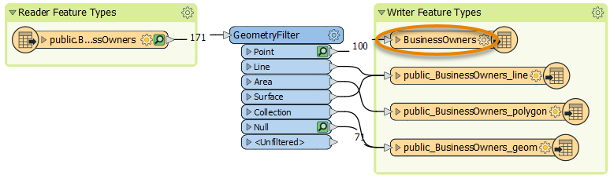
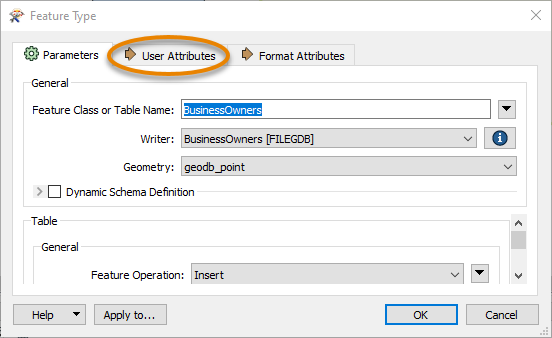
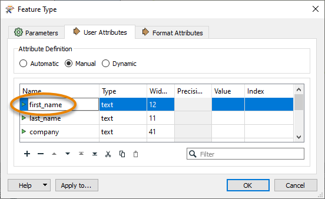
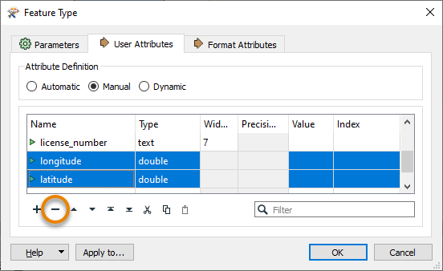
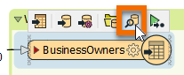

Learning Objectives
After completing this unit, you’ll be able to:
- View your data’s schema.
- Edit your data’s schema, including feature type and attribute names.
Resources
View Source Schema
Jennifer is continuing to work on her workspace in FME Workbench (2021.0 or later). This workspace creates an Esri geodatabase from a PostGIS layer. Jennifer would like her geodatabase to have a different schema than her source PostGIS data. She’d like to make the following changes:
- Change some attributes so they make more sense to the public:
- “first” renamed to “first_name” to match “last_name”
- Move “last_name” to be the first column and sort it alphabetically, matching common convention when working with names
- Remove “latitude” and “longitude” attributes
- Rename feature types to better reflect what they contain:
- “public_BusinessOwners_point” to “BusinessOwners”
- “public_BusinessOwners_geom” to “BusinessOwners_incomplete”. This feature type should contain any features missing geometry so the Quality Assurance team can fix them by adding geometry.
- Remove empty feature types:
- “public_BusinessOwners_line”
- “public_BusinessOwners_polygon”
We’ll cover these two steps in this unit and the next.
Generate Workspace has created a duplicate of the reader schema on the writer schema in Jennifer’s workspace. Now she has to edit the schema to get the results she wants. The first step is to view the writer schema. She does that by double-clicking on the public_BusinessOwners_point feature type to open its dialog.

The writer Feature Type dialog contains all of the data’s schema information:
- Feature type name (in this case, Feature Class or Table Name, but it varies by format)
- Allowed geometries (if any, in this case under Geometry)
- Attribute names (in the User Attributes tab under the Name column)
- They are now all lowercase, matching PostGIS specifications
- Attribute data types (in the User Attributes tab under the Type column)

Rename Output
Jennifer wants to rename the feature types to “BusinessOwners” and “BusinessOwners_incomplete” to distinguish features with and without geometry. She does this by renaming Feature Class or Table Name to “BusinessOwners”.

After changing the text, she clicks OK. The name of the feature type is updated on the canvas.

Jennifer can see some of her data is missing geometry. She can tell because the GeometryFilter has results coming out of the Null port, which means that those features are neither points, lines, or polygons.
 She wants to route the features missing geometry to their own feature class so the Quality Assurance team can fix them. Therefore, she renames the public_BusinessOwners_geom feature type to “BusinessOwners_incomplete”.
She wants to route the features missing geometry to their own feature class so the Quality Assurance team can fix them. Therefore, she renames the public_BusinessOwners_geom feature type to “BusinessOwners_incomplete”.

Now when the geodatabase is written, it will have these names for its feature classes.
Remove Empty Writer Feature Types
Jennifer takes a look at the feature counts along the connection lines coming out of the GeometryFilter. She notices there are no features coming out of the Line, Area, Surface, Collection, or <Unfiltered> ports. That means there are only point and null geometries in the source data. It is therefore unnecessary to handle features from the Line, Area, and Surface output ports, as FME won’t create empty feature classes. Since nothing is being written to these feature types, she deletes the public_BusinessOwners_line and public_BusinessOwners_polygon feature types by right-clicking them and selecting Delete. Now her workspace looks like this:

Edit Writer Feature Type Attributes
Now that Jennifer has edited the feature type names, she would also like to change the attributes. She double-clicks the BusinessOwners feature type to open the dialog. She clicks on the User Parameters tab to view the attributes she wants to edit.

The table listing them can be edited. She can rename them, change their type, reorder them, or add a new attribute. She renames “first” to “first_name” by typing in the Name cell of the table.

She also changes the order of the attributes, clicking on a row to select it and then using the up and down triangle buttons at the bottom of the table to change their order. She uses the Move Down button to move “first_name” down one spot so it comes after “last_name”. 
Jennifer no longer wants the latitude and longitude attributes written to her feature class, so she deletes those attributes from the User Attributes tab of the writer feature type dialog. She selects their rows and clicks the Remove Row button.

She clicks OK to exit the dialog and apply the changes.
View Data with Edited Schema
Jennifer wants to preview her data with the edited schema. She clicks Run and once the workspace is finished, she clicks her BusinessOwners feature type once to select it and then clicks View Written Data.

The data appears in Visual Preview. She can see in Table View that the schema has been edited, but some of the data is missing. For example, “last_name” is in the correct position, but “first_name” doesn’t have any values.

In order to provide the right values to the written data, Jennifer has to map her schema, connecting the source and destination schema.
Exercise
Make sure you have followed along with Jennifer’s steps.